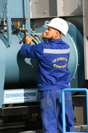
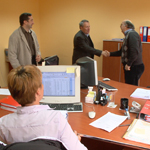
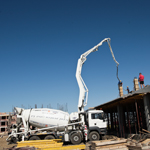
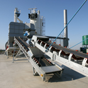
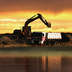

DESPRE NOI
Confort este o companie modernă cu un personal tânăr şi dinamic, dotată cu echipamente şi utilaje de ultimă generaţie, care conduc în fiecare zi la îndeplinirea celor mai înalte standarde de calitate, cantitate şi estetică.
Obiectivul companiei este de a menţine pozitia de lider de piaţă în sectorul construcţiilor din vestul şi sudul ţării şi câstigarea de noi pieţe.
Pentru cresterea continuă a calităţii serviciilor şi a produselor , conducerea companiei a implementat toate sistemele de calitate.
 Calitatea produselor şi a serviciilor, flexibilitatea politicii manageriale, atentia acordată satisfacerii nevoilor clienţilor au condus la recunoasterea societăţii pe plan regional şi naţional .
Pentru a asigura menţinerea societaţii la nivel de lider în domeniul construcţiilor, politica de marketing urmăreşte identificarea, anticiparea şi satisfacerea cerinţelor clienţilor, oferind produse şi servicii de calitate la un preţ accesibil.
Misiunea Confort este furnizarea de servicii de calitate în domeniul construcţiilor civile si industriale, drumuri, reţele de apă şi canalizare, la cel mai înalt nivel.
Valorile pe care le împărtăşim pentru realizarea misiunii noastre sunt: profesionalism, onestitate şi loialitate.
Confort este o companie care lucrează în domeniul construcţiilor de peste 40 ani. Conducerea societăţii este asigurată de o echipă cu o vastă experienţă managerială, experienţă câstigată în ani de activitate acest domeniu. Personalul angajat în cadrul companiei este calificat domeniu în care lucreză, toate acestea dau siguranţă societăţii şi posibilitatea de a lucra eficient, atât sub aspectul calităţii cât şi din punct de vedere economic.
 Consiliul de Administraţie al societăţii determină permanent orientările activităţii companiei şi supraveghează punerea lor în practică. Societatea este condusă de preşedintele Grupului Izometal Confort ec. Georgică Cornu şi de preşedintele Consiliului de administraţie ing.Lucian Caraiman.
Pentru a putea asigura cea mai bună calitate a lucrărilor, Confort şi-a însuşit tehnologii de ultimă generaţie reuşind să obţină aprecierea şi încredere tuturor beneficiarilor. Conducerea companiei a acordat o deosebită atenţie dotării tehnice cu utilaje, maşini, echipamente şi scule specifice pentru toate activitaţile din construcţii.
 Confort dispune de o impresionantă flotă auto, utilaje şi echipamente pentru construcţii. Camioane, auto basculante , diferite tipuri de utilaje, încarcatoare frontale, cilindri compactori, escavatoare şi mini-excavatore, utilaje pentru turnarea asfaltului, autoutilitare. Dotarea actuală se ridică la nivelul celor mai înalte cerinte în domeniul constructiilor de drumuri şi faciliteză executarea unor lucrari de cea mai bună calitate.
Confort execută o gamă completă de lucrări de construcţii. Construcţii civile şi industriale, consolidări, extinderi, reparaţii capitale şi curente, amenajări interioare, lucrări de drumuri şi reţele de apă şi canalizare, linii de tramvai. Toate lucrările contractate de Confort sunt însoţite de servicii de proiectare şi consultanţă pentru alegerea celor mai bune soluţii. Vreme de 40 de ani, Confort şi-a desfasurat activitatea în Timişoara şi vestul româniei, dar în ultimii ani societatea a reuşit să câştige contracte în mai multe oraşe din ţară.
 Confort dispune de două staţii pentru fabricarea mixturilor asfaltice de ultima generatie marca Benninig-hoven cu o capacitate de 160 de t/h. Trei staţii de betoane Steter, asistate de computer cu o capacitate de 45t/h. Depozite pentru piatră Spartă cribluri, ballast, nisip şi sorturi. În cadrul companiei funcţionează o divizie de confecţii metalice care realizează hale industriale, cladiri, structuri metalice, firide gaz, tablouri electrice, cutii hidranţi incendiu.
Confort este o companie care poate satisface la nivel competitiv necesităţile şi cerinţele beneficiarilor în domeniul construcţiilor şi poate oferi execuţia unei game vaste de servicii şiproduse: lucrări de drumuri şi poduri, construcţia de linii de tamvai, construcţia de clădiri civile şi industriale, lucrari de instalatii de alimentare cu apa şi canalizare -transport auto de materiale de construcţii de orice fel, sau mărfuri.
 De peste 40 de ani locuitorii din vestul ţării se bucură de confort şi datorită nouă. Suntem mândri de realizările noastre şi vom continua să fim mereu prezenţi acolo unde proiectele sunt serioase. Viziunea şi idealurile noastre vor fi mereu aceleaşi. Creşterea confortului pentru fiecare dintre dumneavoastră.